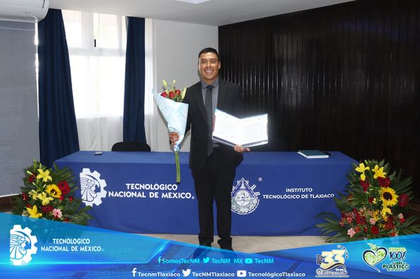
EL INSTITUTO TECNOLÓGICO DE TLAXIACO ENTREGA A LA SOCIEDAD A MARTÍN IVÁN VALLE AYALA, COMO INGENIERO CIVIL.
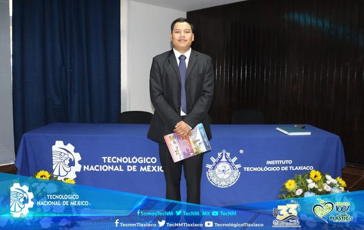
EL INSTITUTO TECNOLÓGICO DE TLAXIACO ENTREGA A LA SOCIEDAD A ÁNGEL JIMÉNEZ MARTÍNEZ, COMO INGENIERO CIVIL.EL INSTITUTO TECNOLÓGICO DE TLAXIACO ENTREGA A LA SOCIEDAD A OMAR ALEXIS RUIZ MENDOZA, COMO LICENCIADO EN ADMINISTRACIÓN.
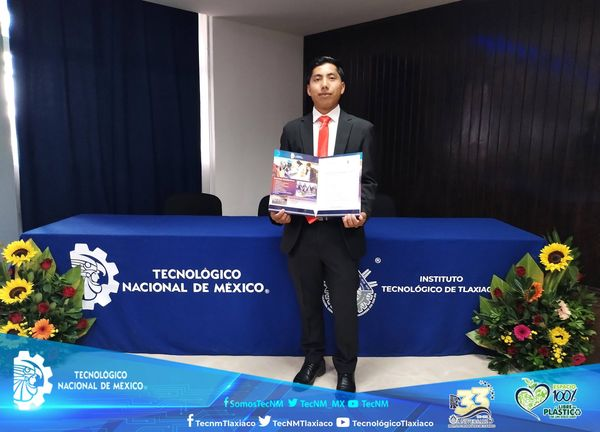
EL INSTITUTO TECNOLÓGICO DE TLAXIACO ENTREGA A LA SOCIEDAD A RIGOBERTO RAMÍREZ NICOLÁS, COMO INGENIERO EN SISTEMAS COMPUTACIONALES.
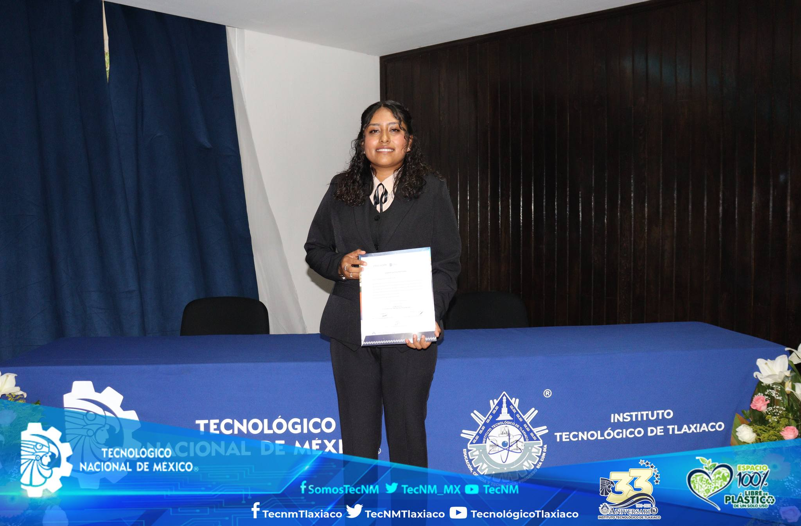
EL INSTITUTO TECNOLÓGICO DE TLAXIACO ENTREGA A LA SOCIEDAD A ALITZEL XADANI BAUTISTA MIGUEL, COMO INGENIERA EN GESTIÓN EMPRESARIAL.
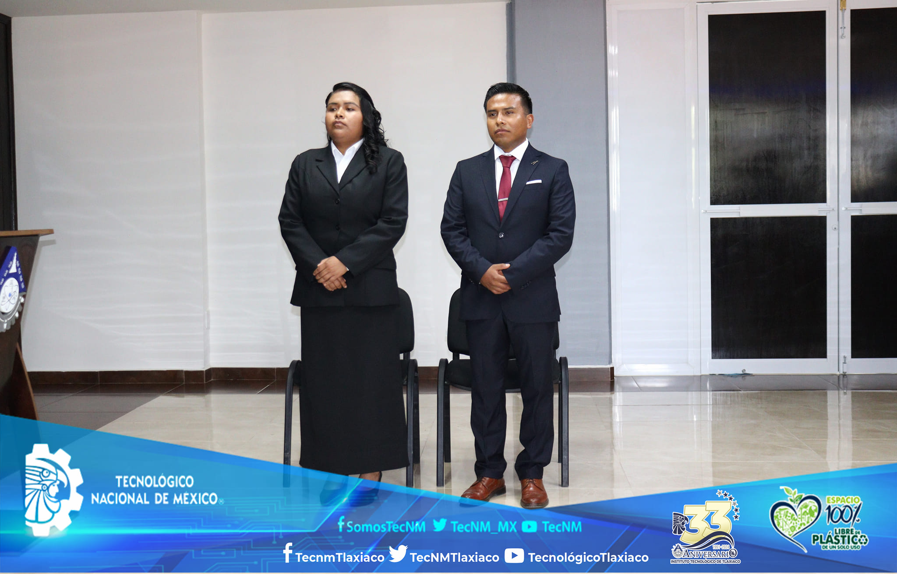
EL INSTITUTO TECNOLÓGICO DE TLAXIACO ENTREGA A LA SOCIEDAD A YABIN ESPAÑA APARICIO Y EVA AGUILAR AVENDAÑO, COMO INGENIERO/A EN SISTEMAS COMPUTACIONALES.
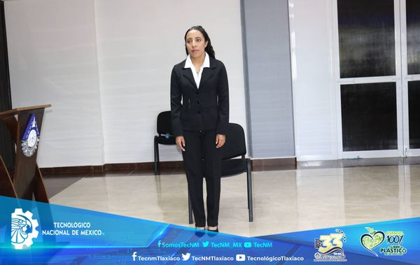
EL INSTITUTO TECNOLÓGICO DE TLAXIACO ENTREGA A LA SOCIEDAD A JOHANA JOSÉ GARCÍA, COMO LICENCIADA EN ADMINISTRACIÓN.
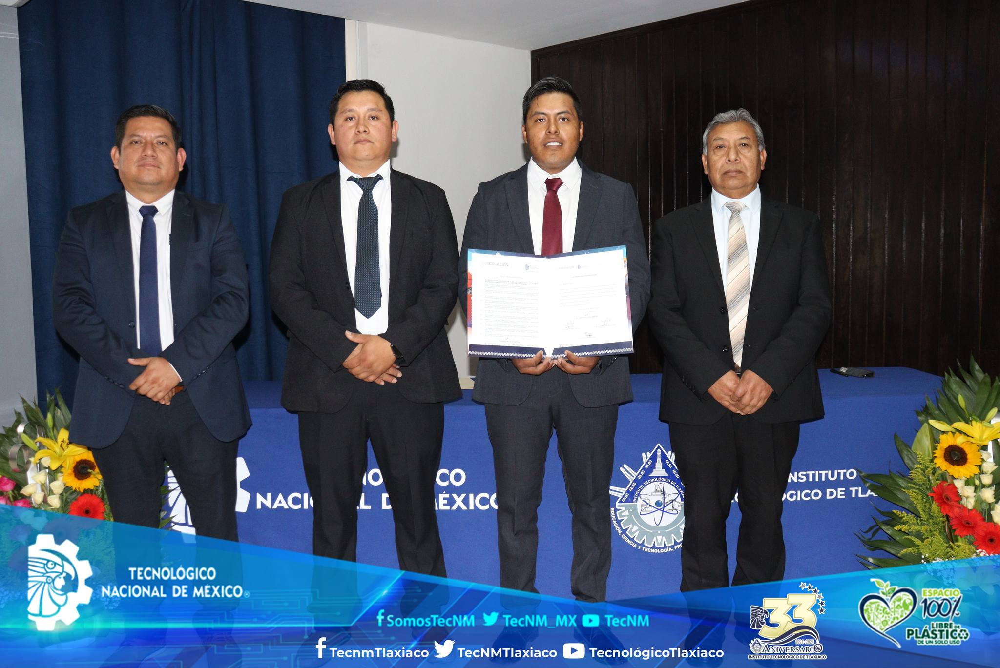
EL INSTITUTO TECNOLÓGICO DE TLAXIACO ENTREGA A LA SOCIEDAD A ROGELIO CRUZ GARCÍA, COMO INGENIERO CIVIL.
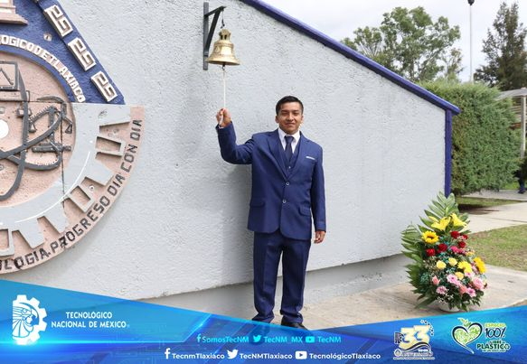
EL INSTITUTO TECNOLÓGICO DE TLAXIACO ENTREGA A LA SOCIEDAD A EDUARDO ÁNGEL SILVA GARCÍA, COMO INGENIERO MECATRÓNICO.
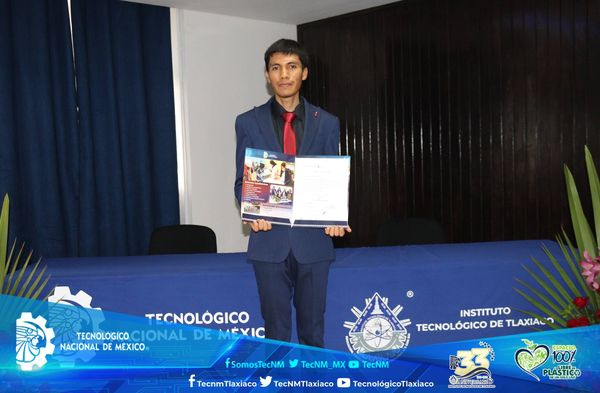
EL INSTITUTO TECNOLÓGICO DE TLAXIACO ENTREGA A LA SOCIEDAD A ISAAC MACHUCA GARCÍA, COMO LICENCIADO EN ADMINISTRACIÓN.
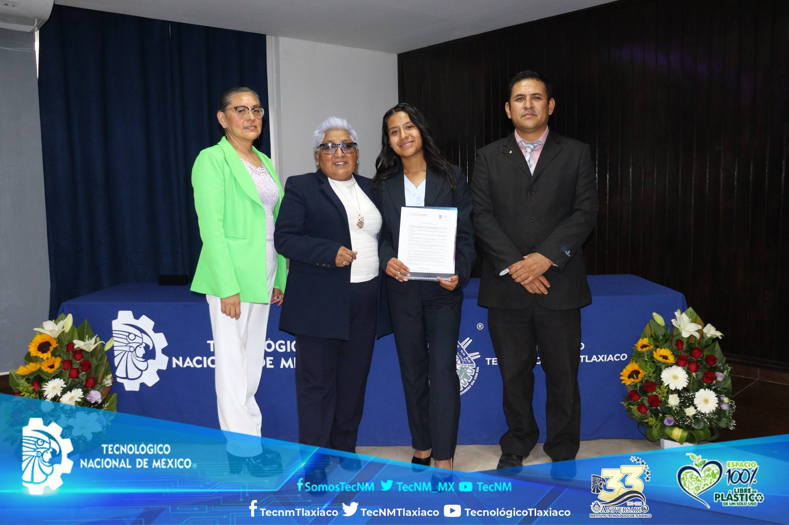
EL INSTITUTO TECNOLÓGICO DE TLAXIACO ENTREGA A LA SOCIEDAD A NORMA GARCÍA JOSÉ, COMO INGENIERA EN GESTIÓN EMPRESARIAL.
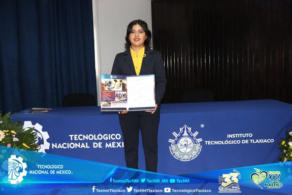
EL INSTITUTO TECNOLÓGICO DE TLAXIACO ENTREGA A LA SOCIEDAD A MAGALY SÁNCHEZ RAMÍREZ, COMO INGENIERA EN GESTIÓN EMPRESARIAL.EL INSTITUTO TECNOLÓGICO DE TLAXIACO ENTREGA A LA SOCIEDAD A MAGALY SÁNCHEZ RAMÍREZ, COMO INGENIERA EN GESTIÓN EMPRESARIAL.EL INSTITUTO TECNOLÓGICO DE TLAXIACO ENTREGA A LA SOCIEDAD A MAGALY SÁNCHEZ RAMÍREZ, COMO INGENIERA EN GESTIÓN EMPRESARIAL.EL INSTITUTO TECNOLÓGICO DE TLAXIACO ENTREGA A LA SOCIEDAD A MAGALY SÁNCHEZ RAMÍREZ, COMO INGENIERA EN GESTIÓN EMPRESARIAL.EL INSTITUTO TECNOLÓGICO DE TLAXIACO ENTREGA A LA SOCIEDAD A MAGALY SÁNCHEZ RAMÍREZ, COMO INGENIERA EN GESTIÓN EMPRESARIAL.EL INSTITUTO TECNOLÓGICO DE TLAXIACO ENTREGA A LA SOCIEDAD A MAGALY SÁNCHEZ RAMÍREZ, COMO INGENIERA EN GESTIÓN EMPRESARIAL.EL INSTITUTO TECNOLÓGICO DE TLAXIACO ENTREGA A LA SOCIEDAD A MAGALY SÁNCHEZ RAMÍREZ, COMO INGENIERA EN GESTIÓN EMPRESARIAL.EL INSTITUTO TECNOLÓGICO DE TLAXIACO ENTREGA A LA SOCIEDAD A MAGALY SÁNCHEZ RAMÍREZ, COMO INGENIERA EN GESTIÓN EMPRESARIAL.EL INSTITUTO TECNOLÓGICO DE TLAXIACO ENTREGA A LA SOCIEDAD A MAGALY SÁNCHEZ RAMÍREZ, COMO INGENIERA EN GESTIÓN EMPRESARIAL.EL INSTITUTO TECNOLÓGICO DE TLAXIACO ENTREGA A LA SOCIEDAD A MAGALY SÁNCHEZ RAMÍREZ, COMO INGENIERA EN GESTIÓN EMPRESARIAL.EL INSTITUTO TECNOLÓGICO DE TLAXIACO ENTREGA A LA SOCIEDAD A MAGALY SÁNCHEZ RAMÍREZ, COMO INGENIERA EN GESTIÓN EMPRESARIAL.EL INSTITUTO TECNOLÓGICO DE TLAXIACO ENTREGA A LA SOCIEDAD A MAGALY SÁNCHEZ RAMÍREZ, COMO INGENIERA EN GESTIÓN EMPRESARIAL.EL INSTITUTO TECNOLÓGICO DE TLAXIACO ENTREGA A LA SOCIEDAD A MAGALY SÁNCHEZ RAMÍREZ, COMO INGENIERA EN GESTIÓN EMPRESARIAL.